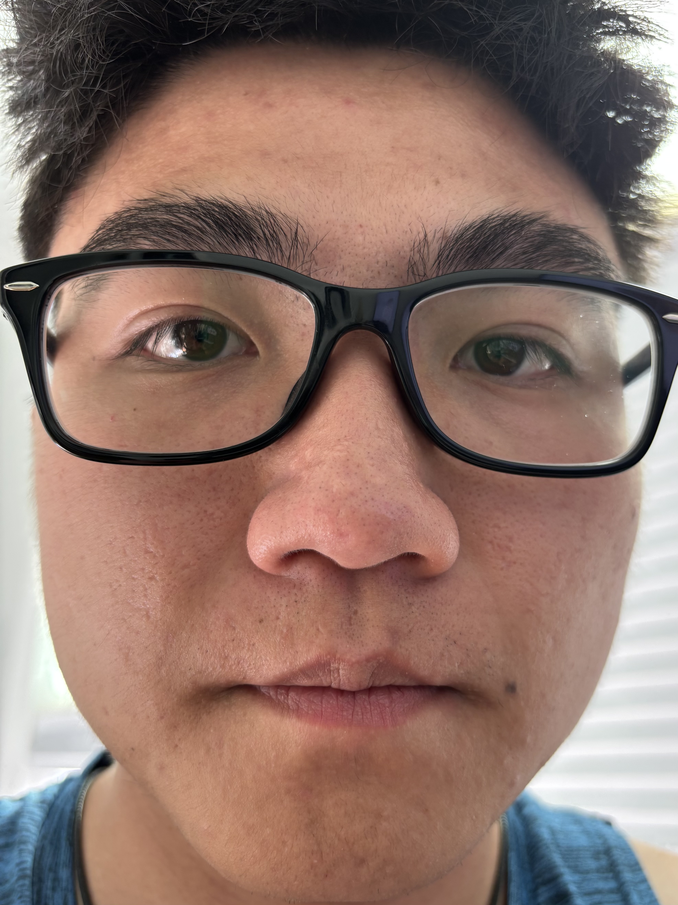
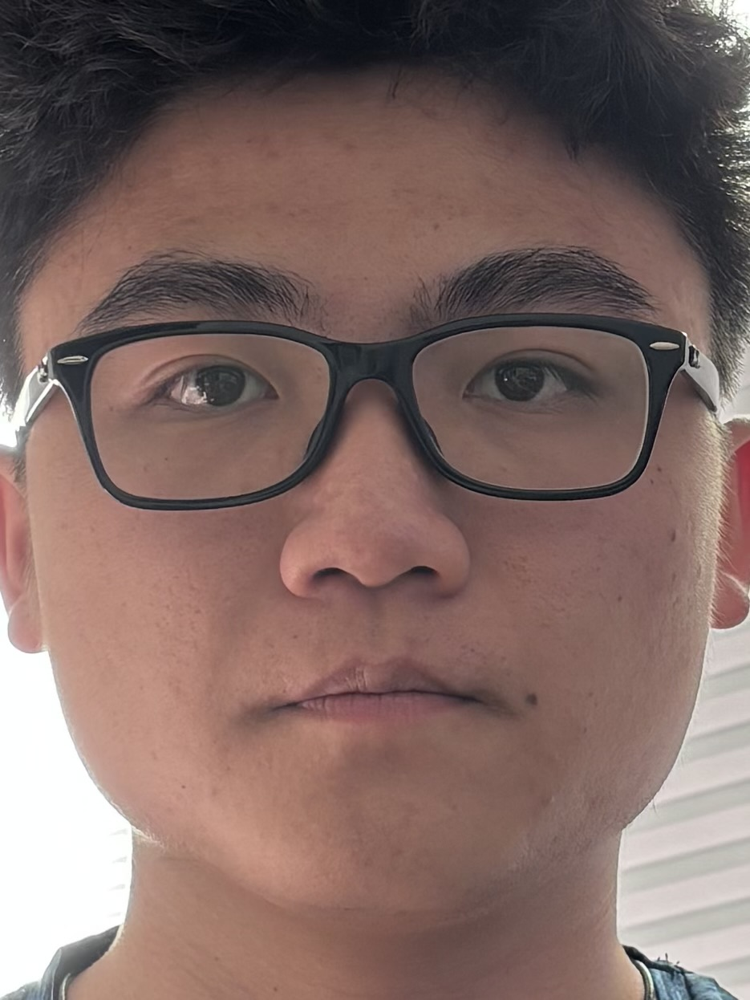

Part 1: Left image is taken from close up, while the right image is taken from about two feet away. In the close-up, my ears do not show and my face is quite oval-shaped, while in the further shot my ears are in frame and my head looks less like an oval.
Part 2: Left image is from further up the street, while the right image is zoomed in after stepping back. In the right image, it seems that the cars parked on the side of the road are quite close together, but seem further apart in the left image.